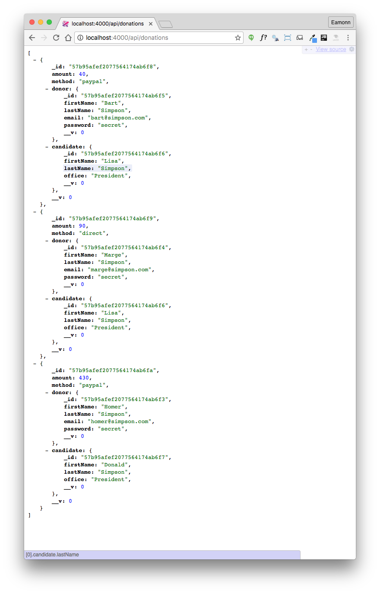
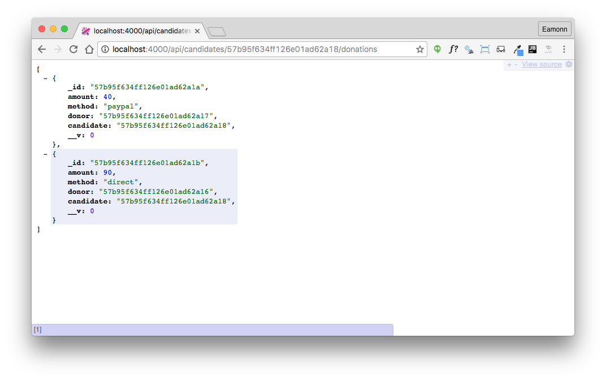
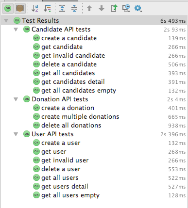
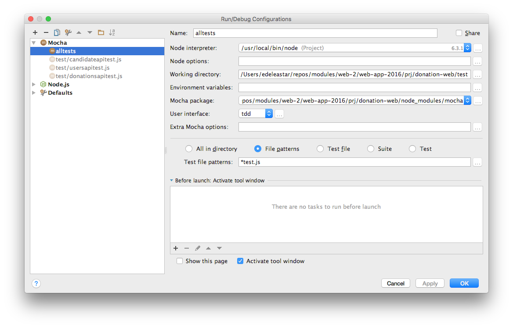

Extend the api to support creating and deleting donations. Donations are associated with candidates, so we utilise the url to establish this relationship.
Using candidatesapitest.js as an example, write/rewrite your usersapitest.js to comprehensively exercise the users api.
deleteOneUser(id) {
return this.httpService.delete('/api/users/' + id);
}
deleteAllUsers() {
return this.httpService.delete('/api/users');
}'use strict';
const assert = require('chai').assert;
const DonationService = require('./donation-service');
const fixtures = require('./fixtures.json');
const _ = require('lodash');
suite('User API tests', function () {
let users = fixtures.users;
let newUser = fixtures.newUser;
const donationService = new DonationService(fixtures.donationService);
beforeEach(function () {
donationService.deleteAllUsers();
});
afterEach(function () {
donationService.deleteAllUsers();
});
test('create a user', function () {
const returnedUser = donationService.createUser(newUser);
assert(_.some([returnedUser], newUser), 'returnedUser must be a superset of newUser');
assert.isDefined(returnedUser._id);
});
test('get user', function () {
const u1 = donationService.createUser(newUser);
const u2 = donationService.getUser(u1._id);
assert.deepEqual(u1, u2);
});
test('get invalid user', function () {
const u1 = donationService.getUser('1234');
assert.isNull(u1);
const u2 = donationService.getUser('012345678901234567890123');
assert.isNull(u2);
});
test('delete a user', function () {
const u = donationService.createUser(newUser);
assert(donationService.getUser(u._id) != null);
donationService.deleteOneUser(u._id);
assert(donationService.getUser(u._id) == null);
});
test('get all users', function () {
for (let u of users) {
donationService.createUser(u);
}
const allUsers = donationService.getUsers();
assert.equal(allUsers.length, users.length);
});
test('get users detail', function () {
for (let u of users) {
donationService.createUser(u);
}
const allUsers = donationService.getUsers();
for (var i = 0; i < users.length; i++) {
assert(_.some([allUsers[i]], users[i]), 'returnedUser must be a superset of newUser');
}
});
test('get all users empty', function () {
const allUsers = donationService.getUsers();
assert.equal(allUsers.length, 0);
});
}); const donationService = new DonationService(fixtures.donationService);Currently our api only supports candidate and user model access/update. What about donations?
We start with just retrieving donations:
...
const DonationsApi = require('./app/api/donationsapi');
...
{ method: 'GET', path: '/api/donations', config: DonationsApi.findAllDonations },
...'use strict';
const Donation = require('../models/donation');
const Boom = require('boom');
exports.findAllDonations = {
auth: false,
handler: function (request, reply) {
Donation.find({}).populate('donor').populate('candidate').then(donations => {
reply(donations);
}).catch(err => {
reply(Boom.badImplementation('error accessing db'));
});
},
};We can use either a browser or postman to test this route:

We are retrieving the seeded donations in the above.
It would be useful to write a test for this route also, but as we cannot yet make a donation the test will be of limited value. We will come back to this as soon as we figure out how making donations can be supported.
Donations are associated with candidates and donors. Using REST principles we imagine a simple path that could yield donations for a specific candidate:
This could retrieve all donations for the candidate with the ID provided in the url.
This is the implementation:
{ method: 'GET', path: '/api/candidates/{id}/donations', config: DonationsApi.findDonations },exports.findDonations = {
auth: false,
handler: function (request, reply) {
Donation.find({ candidate: request.params.id }).then(donations => {
reply(donations);
}).catch(err => {
reply(Boom.badImplementation('error accessing db'));
});
},
};We can test using the browser (on the seeded data):

Creating a donation, and associating it with a candidate, can be implemented using a similar pattern to retrieving donations for a candidate:
{ method: 'POST', path: '/api/candidates/{id}/donations', config: DonationsApi.makeDonation },We can define a route to delete all donations:
{ method: 'DELETE', path: '/api/donations', config: DonationsApi.deleteAllDonations },These are the implementations:
exports.makeDonation = {
auth: false,
handler: function (request, reply) {
const donation = new Donation(request.payload);
donation.candidate = request.params.id;
donation.save().then(newDonation => {
reply(newDonation).code(201);
}).catch(err => {
reply(Boom.badImplementation('error making donation'));
});
},
};
exports.deleteAllDonations = {
auth: false,
handler: function (request, reply) {
Donation.remove({}).then(err => {
reply().code(204);
}).catch(err => {
reply(Boom.badImplementation('error removing Donations'));
});
},
};We can extend the fixtures.json to include some donation objects for test purposes:
...
"donations": [
{
"amount": 40,
"method": "paypal"
},
{
"amount": 90,
"method": "direct"
},
{
"amount": 430,
"method": "paypal"
}
],
...And then we can start to scaffold up our tests. They have a common structure:
'use strict';
const assert = require('chai').assert;
const DonationService = require('./donation-service');
const fixtures = require('./fixtures.json');
const _ = require('lodash');
suite('Donation API tests', function () {
let donations = fixtures.donations;
let newCandidate = fixtures.newCandidate;
const donationService = new DonationService(fixtures.donationService);
beforeEach(function () {
});
afterEach(function () {
});
test('a test function', function () {
});
});Before composing the tests, we need to extend DonationService to support additional features:
makeDonation(id, donation) {
return this.httpService.post('/api/candidates/' + id + '/donations', donation);
}
getDonations(id) {
return this.httpService.get('/api/candidates/' + id + '/donations');
}
deleteAllDonations() {
return this.httpService.delete('/api/donations');
}Here are a first set of tests:
'use strict';
const assert = require('chai').assert;
const DonationService = require('./donation-service');
const fixtures = require('./fixtures.json');
const _ = require('lodash');
suite('Donation API tests', function () {
let donations = fixtures.donations;
let newCandidate = fixtures.newCandidate;
const donationService = new DonationService('http://localhost:4000');
beforeEach(function () {
donationService.deleteAllCandidates();
donationService.deleteAllDonations();
});
afterEach(function () {
donationService.deleteAllCandidates();
donationService.deleteAllDonations();
});
test('create a donation', function () {
const returnedCandidate = donationService.createCandidate(newCandidate);
donationService.makeDonation(returnedCandidate._id, donations[0]);
const returnedDonations = donationService.getDonations(returnedCandidate._id);
assert.equal(returnedDonations.length, 1);
assert(_.some([returnedDonations[0]], donations[0]), 'returned donation must be a superset of donation');
});
test('create multiple donations', function () {
const returnedCandidate = donationService.createCandidate(newCandidate);
for (var i = 0; i < donations.length; i++) {
donationService.makeDonation(returnedCandidate._id, donations[i]);
}
const returnedDonations = donationService.getDonations(returnedCandidate._id);
assert.equal(returnedDonations.length, donations.length);
for (var i = 0; i < donations.length; i++) {
assert(_.some([returnedDonations[i]], donations[i]), 'returned donation must be a superset of donation');
}
});
test('delete all donations', function () {
const returnedCandidate = donationService.createCandidate(newCandidate);
for (var i = 0; i < donations.length; i++) {
donationService.makeDonation(returnedCandidate._id, donations[i]);
}
const d1 = donationService.getDonations(returnedCandidate._id);
assert.equal(d1.length, donations.length);
donationService.deleteAllDonations();
const d2 = donationService.getDonations(returnedCandidate._id);
assert.equal(d2.length, 0);
});
});These tests should run successfully now.
We now have a comprehensive set of tests:

In the above, all the tests have been run collectively via a test file pattern configuration:

You should be able to reproduce this in your IDE.
Introduce a route to support deleting of donations for a single candidate.
Write unit tests to exercise the new delete donations feature.
Currently we leave the donor property of each donation empty, at least when using the api. This is clearly incomplete, as donor are faithfully recorded if the Web UI is engaged.